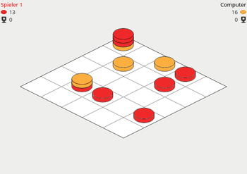

StackAndConquer
Dieser Artikel wurde für die folgenden Ubuntu-Versionen getestet:
Ubuntu 16.04 Xenial Xerus
Zum Verständnis dieses Artikels sind folgende Seiten hilfreich:
StackAndConquer  ist ein Brettspiel inspiriert vom Spielprinzip von Mixtour . Ziel ist es, einen Turm mit mindestens fünf Steinen zu bauen, wobei der oberste Stein die Farbe des Spielers haben muss.
ist ein Brettspiel inspiriert vom Spielprinzip von Mixtour . Ziel ist es, einen Turm mit mindestens fünf Steinen zu bauen, wobei der oberste Stein die Farbe des Spielers haben muss.
Das Spiel befindet sich noch in aktiver Entwicklung. Die Spiellogik ist bereits komplett implementiert, einzig der Computergegner muss noch erweitert und verbessert werden. Wünsche und Anregungen zum Programm können über die Projektseite geäußert werden. Realisiert wurde es mit Hilfe der Grafikbibliothek Qt. Neben Ubuntu werden zusätzliche Versionen für Windows (Downloadseite  ) und weitere Linux-Distributionen (Arch, CentOS, Debian, Fedora, openSUSE) über den openSUSE Build Service angeboten.
) und weitere Linux-Distributionen (Arch, CentOS, Debian, Fedora, openSUSE) über den openSUSE Build Service angeboten.
Installation¶
 Das Programm ist nicht in den offiziellen Paketquellen enthalten. Das Programm kann aber aus dem "Personal Package Archiv" (PPA) [1] des Entwicklers installiert werden.
Das Programm ist nicht in den offiziellen Paketquellen enthalten. Das Programm kann aber aus dem "Personal Package Archiv" (PPA) [1] des Entwicklers installiert werden.
PPA¶
|  |
| Spielfeld |
Adresszeile zum Hinzufügen des PPAs:
ppa:elthoro/stackandconquer
Hinweis!
Zusätzliche Fremdquellen können das System gefährden.
Ein PPA unterstützt nicht zwangsläufig alle Ubuntu-Versionen. Weitere Informationen sind der  PPA-Beschreibung des Eigentümers/Teams elthoro zu entnehmen.
PPA-Beschreibung des Eigentümers/Teams elthoro zu entnehmen.
Damit Pakete aus dem PPA genutzt werden können, müssen die Paketquellen neu eingelesen werden.
Nach dem Aktualisieren der Paketquellen kann das folgende Paket installiert [2] werden:
stackandconquer (ppa)
 mit apturl
mit apturl
Paketliste zum Kopieren:
sudo apt-get install stackandconquer
sudo aptitude install stackandconquer
Bedienung¶
Bei Ubuntu-Varianten mit einem Anwendungsmenü erfolgt der Programmstart [3] über den Menü-Eintrag "Spiele -> Strategie & Taktik -> StackAndConquer". Unter Unity und GNOME 3 gibt man stattdessen den Programmnamen ein.
Das Spiel wird mit der Maus gesteuert. Klickt man mit der linken Maustaste  auf ein freies Feld, so wird ein Stein der eigenen Farbe platziert. Zum Bewegen eines Turms wählt man zuerst den Zielturm und anschließend den Stein/Turm der bewegt werden soll. Besteht solch ein Turm aus mehr als einem Stein, erscheint ein Eingabedialog zur Auswahl wie viele Steine bewegt werden sollen. Hierbei hat das Spiel die Besonderheit, dass die Höhe des Zielturms den Abstand bestimmt, von dem aus dieser Turm in einem Zug erreicht werden muss. Eine ausführliche Beschreibung der Regeln, kann über "Hilfe -> Regeln" aufgerufen werden.
auf ein freies Feld, so wird ein Stein der eigenen Farbe platziert. Zum Bewegen eines Turms wählt man zuerst den Zielturm und anschließend den Stein/Turm der bewegt werden soll. Besteht solch ein Turm aus mehr als einem Stein, erscheint ein Eingabedialog zur Auswahl wie viele Steine bewegt werden sollen. Hierbei hat das Spiel die Besonderheit, dass die Höhe des Zielturms den Abstand bestimmt, von dem aus dieser Turm in einem Zug erreicht werden muss. Eine ausführliche Beschreibung der Regeln, kann über "Hilfe -> Regeln" aufgerufen werden.
Über "Spiel -> Einstellungen" kann ein Spiel konfiguriert werden. Es kann sowohl gegen einen anderen Menschen gespielt werden, als auch gegen einen Computergegner. Sofern in den Einstellungen die Option "Mögliche Turmzüge" aktiviert ist, werden nach der Auswahl eines Turms alle benachbarten Türme angezeigt, die diesen Turm erreichen können. Außerdem kann festgelegt werden, wie viele Türmen man zum Sieg erobern muss.
Eigenen Computergegner erstellen¶
Computergegner sind mittels eines separaten JavaScript Skripts implementiert. Möchte man gegen einen selbst programmierten Gegner antreten, so muss die dazugehörige .js-Datei im Benutzerverzeichnis im Ordner ~/.local/share/stackandconquer/cpu/ abgelegt werden. Nach einem Neustart des Programms, erscheint das Skript im Einstellungsdialog im Aufklapp-Menü zur Auswahl des Gegners. Als Basis für einen neuen Gegner kann das bei der Installation mitgelieferte "DummyCPU"-Skript verwendet werden (/usr/share/stackandconquer/cpu/DummyCPU.js).
Jede Skriptdatei muss eine Funktion makeMove() besitzen. Diese ist die Schnittstelle zwischen Spiel und Skript und wird aufgerufen, sobald der Computergegner an der Reihe ist. Der Rückgabewert dieser Funktion teilt dem Spiel mit, ob der Computergegner einen Stein auf ein freies Feld setzen möchte (z.B. Rückgabewert "0,0" bedeutet, dass ein Stein auf dem Feld mit Koordinate 0,0 platziert werden soll) oder einen Turm bewegen möchte (z.B. Rückgabewert "0,0|1,1|2" bedeutet: Zwei Steine sollen von Feld 0,0 auf Feld 1,1 bewegt werden). Dabei überprüft das Spiel, ob der Computer einen gültigen Zug ausführen möchte. Die Variable board repräsentiert das Spielfeld und enthält alle aktuell platzierten Türme als dreidimensionales Feld ("Array").
Infobox¶
| StackAndConquer | |
| Genre: | Denkspiel (Entwickeln einer Gewinnstrategie) |
| Sprache: |  |
| Veröffentlichung: | 2017 |
| Entwickler: | Shakesbier (GitHub ) |
| Systemvoraussetzungen: | - |
| Medien: | Download |
| Strichcode / EAN / GTIN: | - |
| Läuft mit: | nativ |
 Programmübersicht
Programmübersicht- Erstellt mit Inyoka
-
 2004 – 2017 ubuntuusers.de • Einige Rechte vorbehalten
2004 – 2017 ubuntuusers.de • Einige Rechte vorbehalten
Lizenz • Kontakt • Datenschutz • Impressum • Serverstatus -
Serverhousing gespendet von